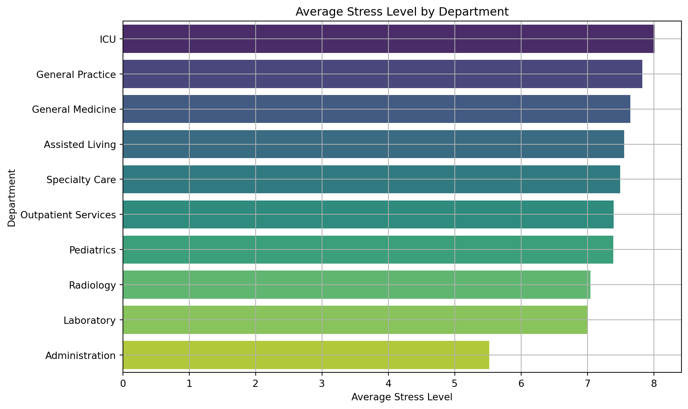
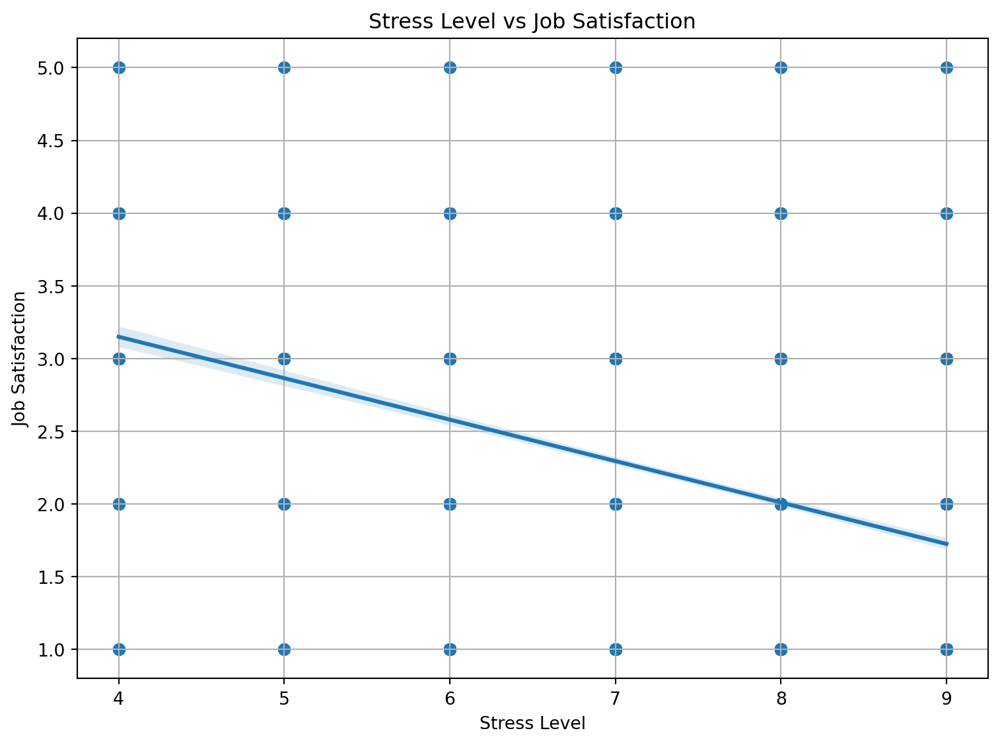

import os
import pandas as pd
import numpy as np
import matplotlib.pyplot as plt
import seaborn as sns
import plotly.express as px
from scipy.stats import chi2_contingency, spearmanrMental Health Analysis in the Healthcare Workforce
Introduction
This project performs a comprehensive analysis of the UCI Healthcare Workforce Mental Health Dataset. It explores stress levels, job satisfaction, mental health absences, and burnout across departments and roles. The goal is to identify areas for improvement and propose evidence-based strategies.
Load Required Libraries
Load the Dataset
processed_dir = "processed"
file_path = os.path.join(processed_dir, "Healthcare Workforce Mental Health Dataset.csv")
df = pd.read_csv(r"C:\Users\Dione\Downloads\healthcare\data\processed\Healthcare Workforce Mental Health Dataset.csv")
df.head()| Employee ID | Employee Type | Department | Workplace Factor | Stress Level | Burnout Frequency | Job Satisfaction | Access to EAPs | Mental Health Absences | Turnover Intention | |
|---|---|---|---|---|---|---|---|---|---|---|
| 0 | HCP-00001 | Pediatric Nurse | Pediatrics | Heavy Workload | 8 | Often | 2 | Yes | 6 | No |
| 1 | HCP-00002 | Laboratory Technician | Laboratory | Safety Concerns | 8 | Often | 1 | Yes | 12 | No |
| 2 | HCP-00003 | Nursing Assistant | Assisted Living | Poor Work Environment | 6 | Occasionally | 2 | Yes | 9 | Yes |
| 3 | HCP-00004 | Medical Assistant | Outpatient Services | Poor Work Environment | 7 | Never | 4 | No | 11 | No |
| 4 | HCP-00005 | Registered Nurse | General Medicine | Work-Life Imbalance | 8 | Occasionally | 2 | Yes | 7 | No |
Average Stress Level by Department
avg_stress = df.groupby('Department')['Stress Level'].mean().sort_values(ascending=False)
plt.figure(figsize=(10, 6))
sns.barplot(x=avg_stress.values, y=avg_stress.index, palette="viridis")
plt.title("Average Stress Level by Department")
plt.xlabel("Average Stress Level")
plt.ylabel("Department")
plt.grid(True)
plt.tight_layout()
plt.show()C:\Users\Dione\AppData\Local\Temp\ipykernel_1312\1220366101.py:3: FutureWarning:
Passing `palette` without assigning `hue` is deprecated and will be removed in v0.14.0. Assign the `y` variable to `hue` and set `legend=False` for the same effect.

Stress Level vs Job Satisfaction
plt.figure(figsize=(8, 6))
sns.regplot(x='Stress Level', y='Job Satisfaction', data=df, scatter_kws={'alpha': 0.5})
plt.title("Stress Level vs Job Satisfaction")
plt.xlabel("Stress Level")
plt.ylabel("Job Satisfaction")
plt.grid(True)
plt.tight_layout()
plt.show()
Mental Health Absences by Access to EAPs
avg_absence_by_eap = df.groupby('Access to EAPs')['Mental Health Absences'].mean().reset_index()
fig = px.bar(
avg_absence_by_eap,
x='Access to EAPs',
y='Mental Health Absences',
title='Mental Health Absences by Access to EAPs',
color_discrete_sequence=['#00ffff'],
text='Mental Health Absences'
)
fig.update_traces(texttemplate='%{text:.2f}', textposition='outside', cliponaxis=False)
fig.update_layout(
template='plotly_dark',
xaxis_title='Access to EAPs',
yaxis_title='Mental Health Absences',
yaxis_range=[0, 9],
width=600,
height=400,
margin=dict(l=200, r=60, t=50, b=80)
)
fig.show()Job Satisfaction by Employee Type
avg_satisfaction_by_type = df.groupby('Employee Type')['Job Satisfaction'].mean().reset_index()
fig = px.bar(
avg_satisfaction_by_type,
x='Employee Type',
y='Job Satisfaction',
title='Job Satisfaction by Employee Type',
labels={
'Job Satisfaction': 'Average Job Satisfaction',
'Employee Type': 'Employee Type'
},
color_discrete_sequence=['#00ffff'],
text='Job Satisfaction'
)
fig.update_traces(texttemplate='%{text:.2f}', textposition='outside')
fig.update_layout(
template='plotly_dark',
xaxis_title='Employee Type',
yaxis_title='Average Job Satisfaction',
xaxis_tickangle=-15,
width=1000,
height=500,
margin=dict(l=150, r=50, t=80, b=100)
)
fig.show()Spearman Rank Correlation: Stress vs Job Satisfaction
corr, p_val = spearmanr(df['Stress Level'], df['Job Satisfaction'])
print(f"Spearman correlation: {corr:.3f}, p-value: {p_val:.4f}")
# Use when:
# Data is not normally distributed
# You suspect a nonlinear but monotonic relationship
# Variables are ordinal (like "Job Satisfaction" rated 1-5)Spearman correlation: -0.366, p-value: 0.0000Chi-Square Test: Department vs Burnout Frequency
df_clean = df[['Department', 'Burnout Frequency']].dropna()
contingency = pd.crosstab(df_clean['Department'], df_clean['Burnout Frequency'])
chi2, p, dof, expected = chi2_contingency(contingency)
print("Chi-Square Test Results")
print(f"Chi2 Statistic: {chi2:.2f}, p-value: {p:.4f}, Degrees of freedom: {dof}")
if p < 0.05:
print(" There is a statistically significant association between Department and Burnout Frequency.")
else:
print(" There is no statistically significant association between Department and Burnout Frequency.")Chi-Square Test Results
Chi2 Statistic: 144.41, p-value: 0.0000, Degrees of freedom: 18
There is a statistically significant association between Department and Burnout Frequency.Recommendations
- Implement stress management and resilience training programs.
- Improve access to Employee Assistance Programs (EAPs).
- Tailor interventions for departments with high burnout rates.
- Regularly monitor mental health indicators across roles and departments.
- Encourage open dialogue and mental health support in the workplace.